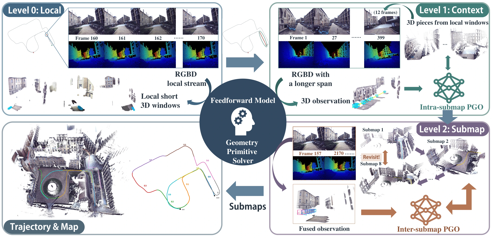

ReCall-SLAMClassrooms · 27,002 framesTOP VIEW
Explore the final 3D reconstruction
Drag to rotate · scroll to zoomLoading 3D…
Loading 3D…
How it works
RGB-D SLAM can be viewed as repeatedly solving the same local problem at increasing map scales: nearby views recover camera motion and local structure, wider observations reconcile geometry over a region, and views around a place revisited much later relate distant parts of the trajectory.
Based on this insight, we present ReCall-SLAM, a training-free system that retains observation history and repeatedly poses these bounded reconstruction problems to one pretrained Pi3X model. Bounded regional graphs and a compact global graph integrate these predictions into a persistent, revisable map while all levels advance asynchronously.

MORE 3D COMPARISONS
FastCaMo-Real
Loading 3D…
Loading 3D…
Oxford Spires
Loading 3D…
Loading 3D…
Ground truthMethod trajectory